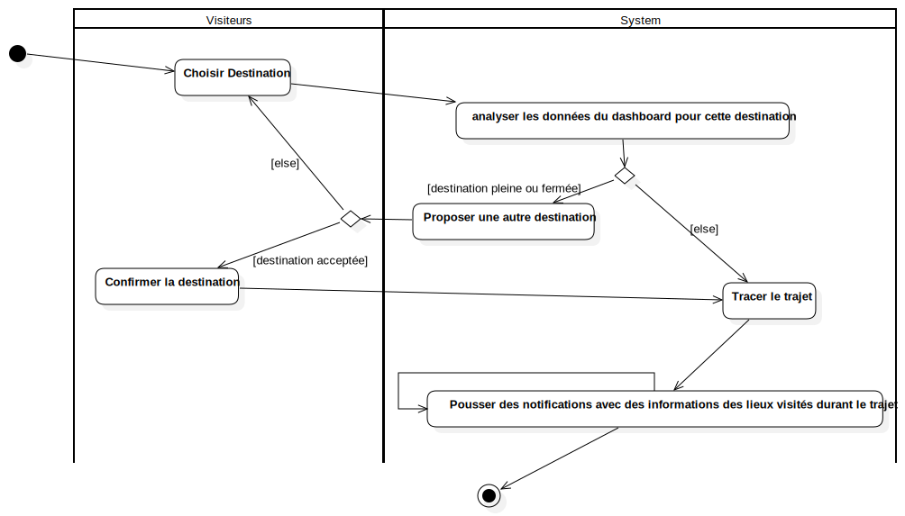

Activity diag: Service Guide
UMLActivity
Smart Tourisme
::
Activity diag: Service Guide
Description
none
Diagrams

Service Guide Activity diag
Groups
Visiteurs
System
Nodes
InitialNode1
ActivityFinalNode1
Edges
(InitialNode1→Choisir Destination)
(Choisir Destination→Tracer le trajet)
(Choisir Destination→analyser les données du dashboard pour cette destination)
(analyser les données du dashboard pour cette destination→DecisionNode1)
[destination pleine ou fermée] (DecisionNode1→Proposer une autre destination)
[else] (DecisionNode1→Tracer le trajet)
(Proposer une autre destination→DecisionNode2)
[else] (DecisionNode2→Choisir Destination)
[destination acceptée] (DecisionNode2→Confirmer la destination)
(Confirmer la destination→Tracer le trajet)
(Tracer le trajet→Pousser des notifications avec des informations des lieux visités durant le trajet)
(Pousser des notifications avec des informations des lieux visités durant le trajet→ActivityFinalNode1)
(Pousser des notifications avec des informations des lieux visités durant le trajet→Pousser des notifications avec des informations des lieux visités durant le trajet)
Properties
Name
Value
name
Activity diag: Service Guide
stereotype
null
visibility
public
isReentrant
true
isReadOnly
false
isSingleExecution
false
Owned Elements
Service Guide Activity diag